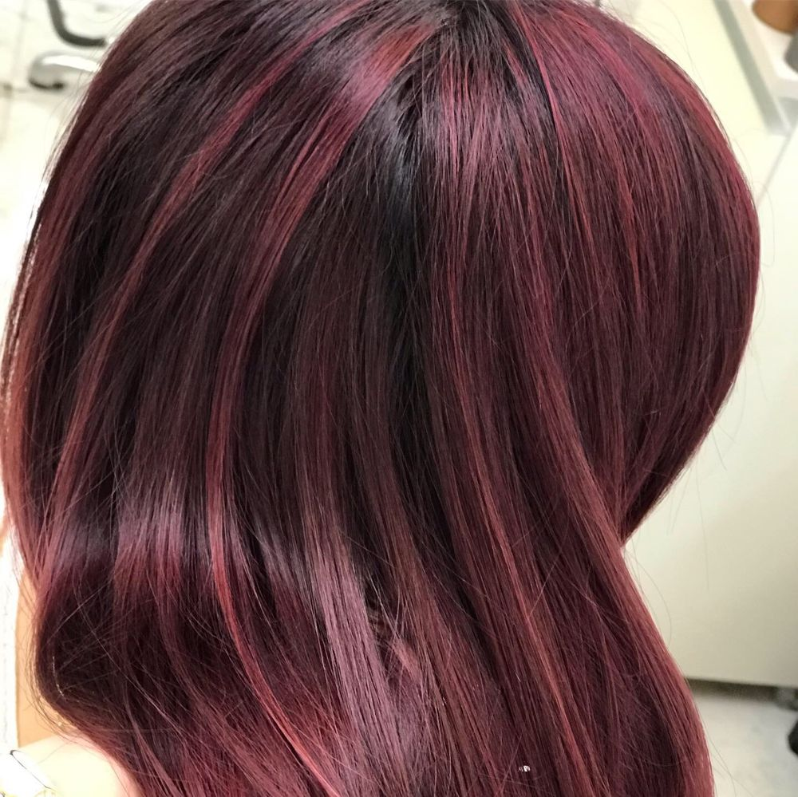
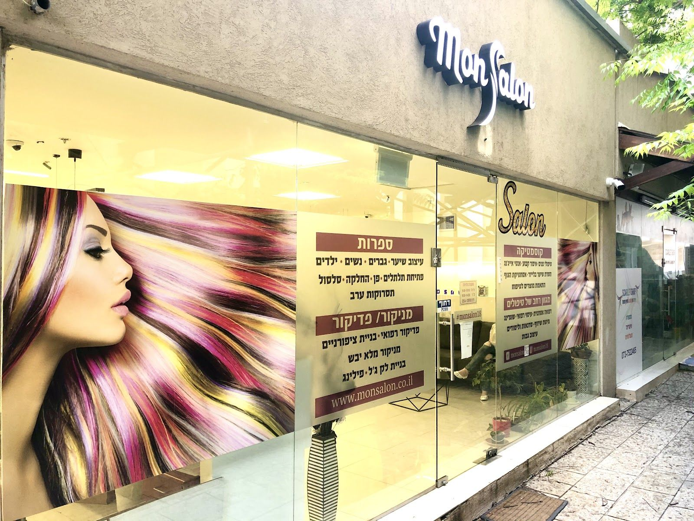
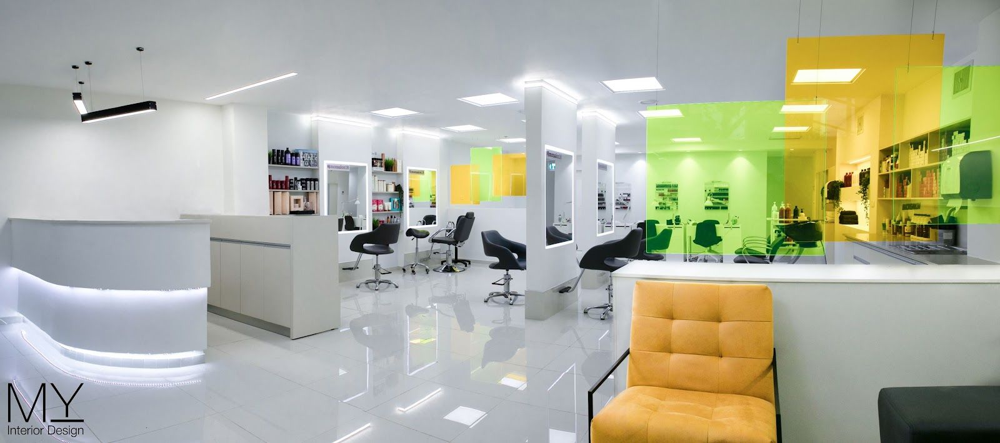
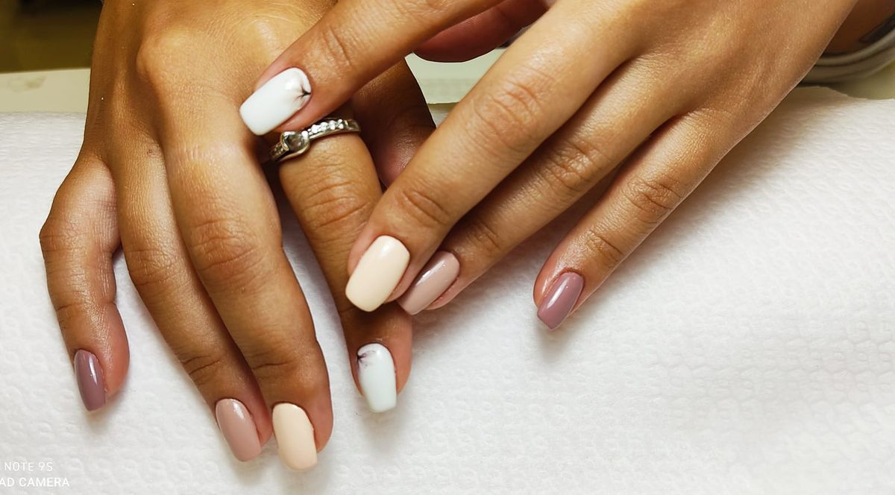
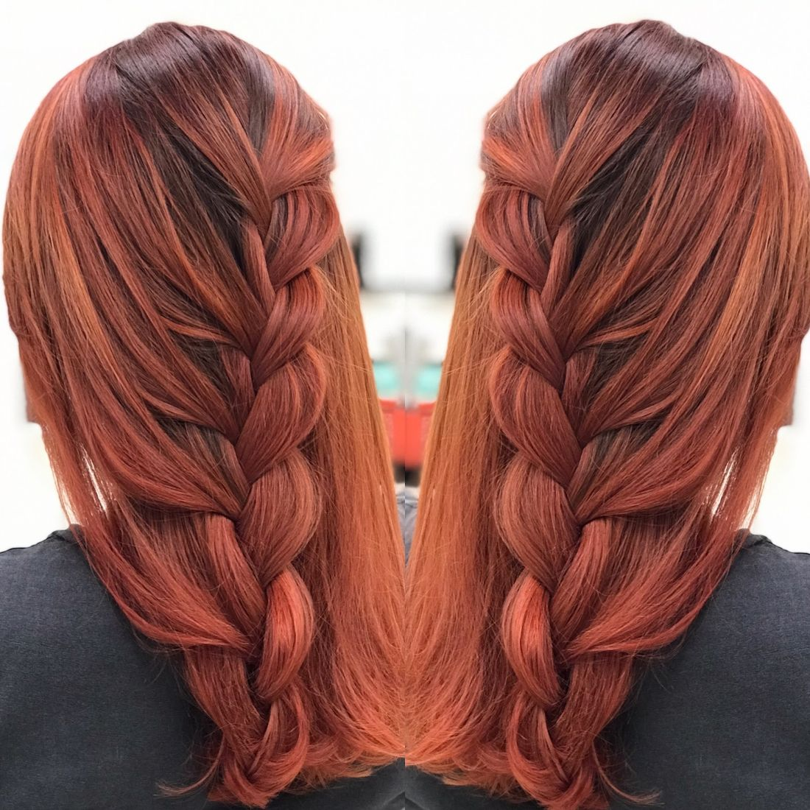

ספרותHair
עיצוב שיער · גברים · נשים · ילדים · פתיחת תלתלים · פן · החלקה · סלסול · תסרוקות ערבHair styling · Men · Women · Children · Curl relaxing · Blow-dry · Straightening · Perms · Evening updos
קונספט לדוגמה שנבנה עבור Mon Salon · זה אינו האתר הרשמי של העסקA sample concept built for Mon Salon · This is not the business’s official website

Mon Salon – בצרפתית, ״הסלון שלי״. סלון יופי בשדרות פל ים 11, חיפה.Mon Salon – French for “my salon”. A beauty salon at 11 Sderot Pal-Yam, Haifa.

חלל אחד, לבן ומואר: ספרות, ציפורניים, קוסמטיקה וטיפולים.One bright, white room: hair, nails, cosmetics and treatments.
מתוך תמונות העסק בגוגל · עיצוב הפנים: MY Interior Design, כפי שמופיע בתמונהFrom the business’s Google photos · Interior design: MY Interior Design, as credited on the photo
ארבע מחלקות, כמו על הזכוכית בכניסה.Four departments, as lettered on the glass by the door.

עיצוב שיער · גברים · נשים · ילדים · פתיחת תלתלים · פן · החלקה · סלסול · תסרוקות ערבHair styling · Men · Women · Children · Curl relaxing · Blow-dry · Straightening · Perms · Evening updos

פדיקור רפואי · בניית ציפורניים · מניקור מלא יבש · בניית לק ג׳ל · פילינגMedical pedicure · Nail extensions · Full dry manicure · Gel polish builds · Peeling
טיפולי פנים · איפור קבוע · אנטי־אייג׳ינג · הסרת שיער בלייזר · אסתטיקת הגוף · התאמת מוצרים לטיפוחFacials · Permanent make-up · Anti-ageing · Laser hair removal · Body aesthetics · Skincare matched to you
רפואה אסתטית · עיסוי רפואי · שוגרינג · מיטת שיזוף · עיצוב גבות · סדנאות ולימודיםAesthetic medicine · Medical massage · Sugaring · Tanning bed · Brow shaping · Workshops & courses

כל התמונות מתוך תמונות העסק בגוגלAll photos from the business’s Google listing
סלון יופי מקצועי, שנותן שירות ברמה הכי גבוה שראיתי… חוויתי רק אווירה נעימה… יחס חם, עוטף ונדיב… האם זה שער, פנים, עיסוי או צפורניים… בהחלט סלון הכי טוב
A professional beauty salon, with the highest level of service I’ve seen… I’ve only known a pleasant atmosphere… warm, embracing and generous care… whether it’s hair, face, massage or nails… definitely the best salon.
ווירוניקה אלופה, עבודה מקצועית 100% ממליצה בחום
Veronika is a champion, 100% professional work. Warmly recommended.
״Mon Salon הוא הסלון הכי טוב בעיר שלנו… יש שם אווירה נעימה וחמה, ובכל פעם שמגיעים לבנות, מקבלים אותך כמו מישהי קרובה. הבנות תמיד יציעו תה, קפה, מים.״
“Mon Salon is the best salon in our city… The atmosphere is pleasant and warm, and every time you come to the girls you’re welcomed like someone close. The girls always offer tea, coffee, water.”
Mon Salon лучший салон в нашем городе… Всегда девочки предложат чай, кофе, воды.
״אני מאוד אוהבת אותן. כל הבנות נהדרות ומקצועיות.״
“I love them very much. The girls are all wonderful and professional.”
Я их очень люблю. Девочки все великолепные, профессиональные.
ספרים מאד טובים מומלץ
Very good hairdressers, recommended.
כן. על החלון כתוב: עיצוב שיער לגברים, לנשים ולילדים.Yes. The window says: hair styling for men, women and children.
כן, לצד בניית ציפורניים, מניקור מלא יבש ובניית לק ג׳ל.Yes, alongside nail extensions, full dry manicures and gel polish builds.
כן: הסרת שיער בלייזר במחלקת הקוסמטיקה, וגם שוגרינג.Yes: laser hair removal in the cosmetics department, and sugaring too.
על החלון כתוב ״סדנאות ולימודים״. לפרטים, כדאי לשאול בוואטסאפ.The window lists “workshops and courses”. Ask on WhatsApp for details.
א׳ וג׳–ה׳ 9:00–18:00, ו׳ 9:00–14:00. ביום שני ובשבת סגור.Sun and Tue–Thu 9:00–18:00, Fri 9:00–14:00. Closed Monday and Saturday.